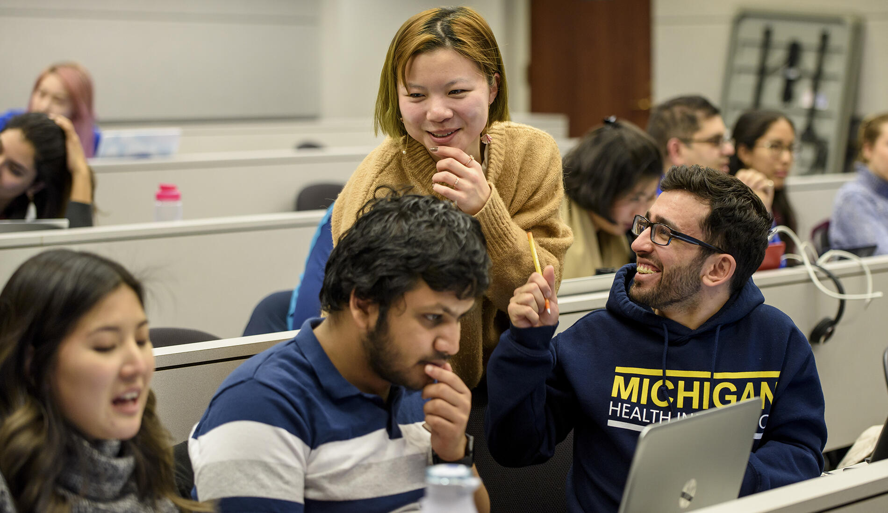

Welcome to UMSI Academic Support!
The Academic Success Team at UMSI is dedicated to supporting students inside and outside of the classroom. This site is dedicated to connecting students to tutoring and academic support resources.
UMSI Programming Peer tutoring
UMSI Programming Peer Tutoring Information Available for the below courses:
- SI 106 Programs, Information, and People
- SI 206 Data-Oriented Programming
- SI 506 Programming I
- SI 507 Intermediate Programming
- SIADS 505 Data Manipulation
- General Python support
If you have questions regarding the Programming Peer Tutoring, you can email Professor Anthony Whyte at carwhyte@umich.edu and/or the UMSI Academic Success Team at umsi.academicsuccess@umich.edu for support.
Book Appointments with our Programming Peer Tutors:
Tamariah Davis
Background: Tamariah is an AMDP student in the MSI program,
specializing in Big Data Analytics. Recently earning a BSI in Information Analysis in May,
she brings a strong academic background to her role as a peer tutor. Outside of academics, her
interests include tennis, community engagement, and spending time with friends.
Areas of Expertise: SI 106, SI 206
Book an appointment with Tamariah
Prem Ganesan
Background: Prem is a second-year master’s student specializing in health informatics,
building on a strong foundation from a master’s degree in computer science. With 5 years of Python experience,
Prem has worked on projects in data analysis, machine learning, and AI, focusing on healthcare applications.
Outside of academics, interests include soccer, with experience playing at a professional level.
Areas of Expertise: SI 106, SI 206, SI 301, SI 506, SI 507, General Programming
Book an appointment with Prem
UMSI Math Peer tutoring

UMSI Math Peer Tutoring Information Available for the below courses:
- Linear algebra
- Statistics
- SIADS 502 Math Methods I
- General Math related course support
If you have questions regarding Math Peer Tutoring, you can email the UMSI Academic Success Team at umsi.academicsuccess@umich.edu for support and/or if you are interested in applying to be a Math Peer Tutor.
Book Appointments with our Math Peer Tutors:
Rahat Naseem
Background: Rahat provides support in algebra,
statistics, and a variety of other math-related topics. With experience in
linear algebra, calculus, and additional advanced math subjects, Rahat assists
with homework, concept clarification, and exam preparation. By promoting a
shift from a fixed to a growth mindset, the focus is on helping students
overcome math anxiety and build confidence.
Areas of Expertise: SI 425, SI 370, SI 539
Book an appointment with Rahat
Ayush Shah
Background: Ayush is a student in the Big Data Track at UMSI with prior
experience as a peer tutor during undergraduate studies. With strong skills in data analysis
and visualization, Ayush specializes in interpreting complex datasets and deriving actionable
insights, particularly in the field of sports analytics. Outside of academics, interests include
following a variety of sports such as soccer, F1, tennis, and American football.
Areas of Expertise: SI 330, SI 544
Book an appointment with Ayush
Additional Academic Support
Sweetland Writing Center: The Sweetland Center for Writing supports student writing at all levels and in all forms and modes. Sweetland offers one-to-one tutoring for undergraduate and graduate students in our faculty-led Writing Workshop and undergraduate Peer Writing Center, and teaches writing courses from the undergraduate to the graduate level. Sweetland also provides support for all multilingual and international undergraduate students.
English Language Institute: ELI exclusively serves members of the University of Michigan community with English for Academic Purposes courses and resources, GSI preparation, and TESOL courses that prepare students to teach English as a second or foreign language.
Math Lab: The Math Lab provides free tutoring for mathematics courses numbered through 217. Though help is not regularly available for other courses, we will attempt to answer the questions of any U-M student who comes to us for mathematics help.
Services for Students with Disabilities: Services for Students with Disabilities (SSD) recognizes disability as an integral part of diversity and is committed to creating an inclusive and equitable educational environment for disabled students.